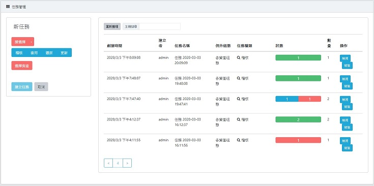
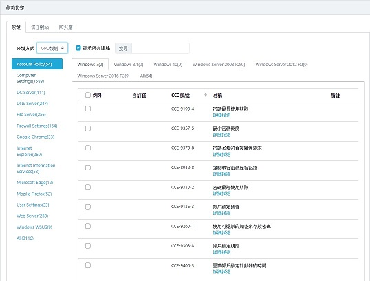
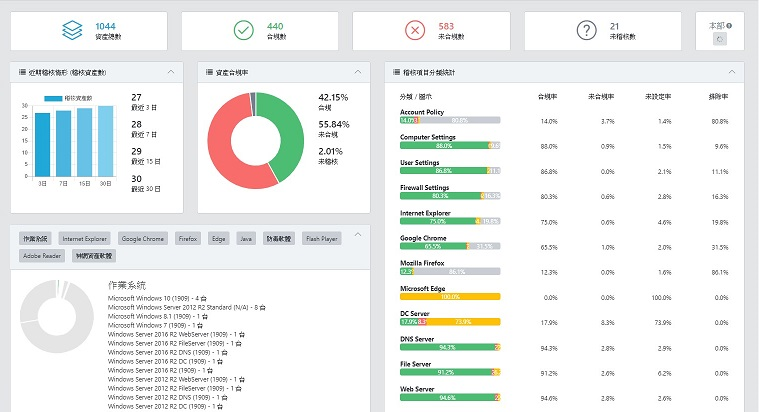
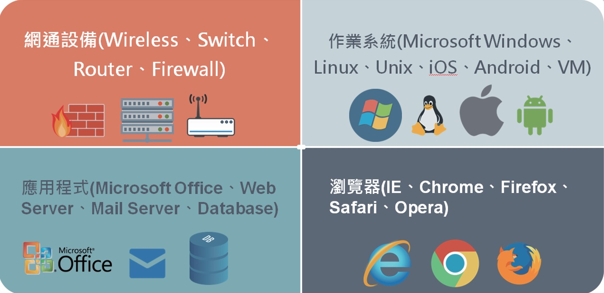

GCB是什麼?
GCB為政府組態基準 (Government Configuration Baseline) 的縮寫。美國政府組態基準設定 (US GCB) 是由美國國家標準與技術研究所 (NIST) 針對駭客入侵相關數據所提出的有效安全建議值。
US GCB主旨在於規範 IT 配置基準，加強系統強化程序，且改善及維護電腦安全的有效配置設定。TWGCB 則是參考美國政府配置基準，
針對台灣電腦系統環境所規範出的設定值。
D-GCB 能針對政府機關單位的資通訊軟體進行檢測，測試端點設備是否符合 TW GCB 組態設定值，進而降低內部電腦遭受攻擊的風險，避免資安疑慮。
產品效益
- 軟體自動化稽核、套用，提供完整組態歷程。

- 免安裝程式 (Agentless)，透過遠端方式掃描。
- 因應例外事件，使用者可自訂例外組態管理。

- 可視化儀表板與圖示報表評估組態狀態。

- 完整組態備份與還原，有助於回溯套用組態。
GCB稽核導入流程圖
稽核項目
- 帳戶安全性 (Account Policy)：對於密碼原則、密碼長度、帳戶鎖定原則等組態進行檢測。
- 個人電腦系統 (Computer Settings)：針對安全性選項、使用者權限指派、網際網路通訊設定、自動播放等組態進行檢測。
- 防火牆設定 (Firewall Settings)：Windows 防火牆公用設定檔、私人設定檔、網域設定檔等組態進行檢測。
- 使用者設定 (User Settings) ：使用者螢幕保護裝置、網際網路通訊、網路共用、附件管理員等組態進行檢測。
- 附加軟體資產管理系統 (Dragonsoft SoftwareAsset Management, D-SAM)，能取得端點設備的資產清單，能讓管理者掌握現行的資產清單，亦能針對內部營運狀況做資產汰換，提升效益。
- IE 瀏覽器 (Internet Explorer)：Internet Explorer 內部網路區域、信任的網站區域等區域進行 JAVA 權限、登入選項、Active X 控制項等設定檔等組態進行檢測。
- Chrome 瀏覽器 (Google Chrome)：對於 Google Chrome 內容設定、HTTP 驗證政策、密碼管理員、設定遠端存取選項、擴充功能等組態進行檢測。
